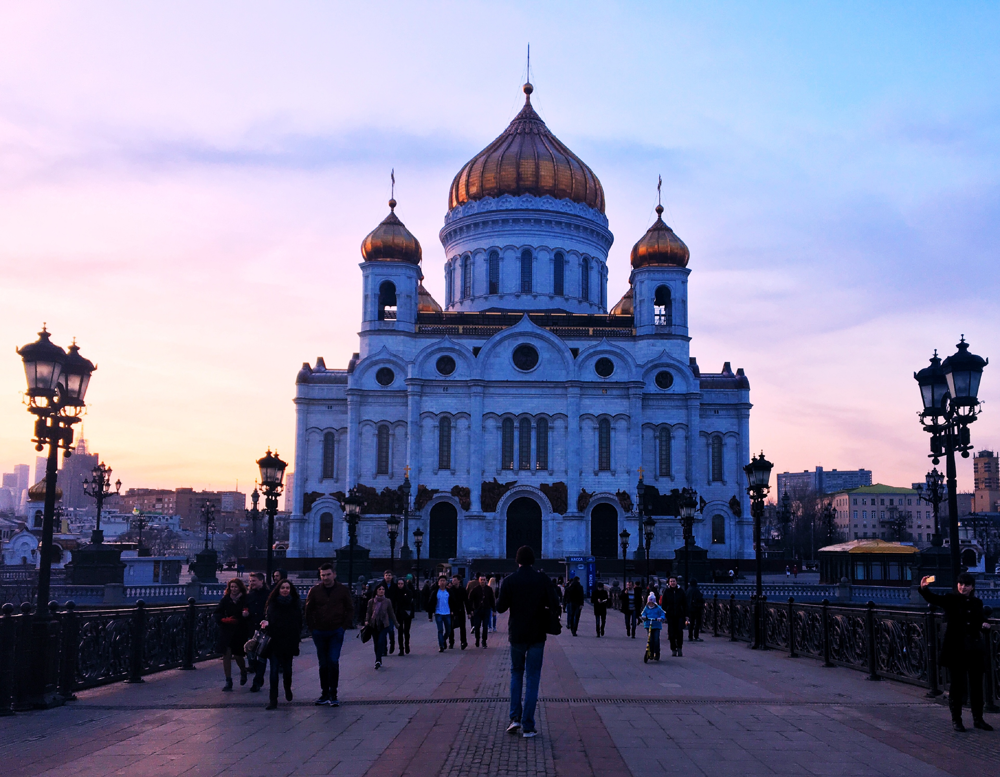

Cathedral of Christ the Saviour, Moscow, Russia (2018)
One nice evening stroll in Moscow's summer with correct amount of natural lighting.
- Retouch contrast and brightness on Adobe Photoshop
- ƒ/1.8 aperture
- ISO 120
Available on paper prints and wall art